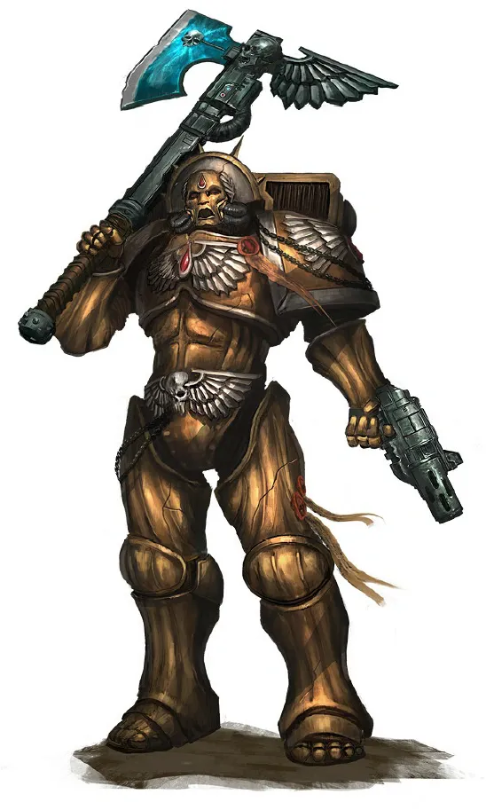
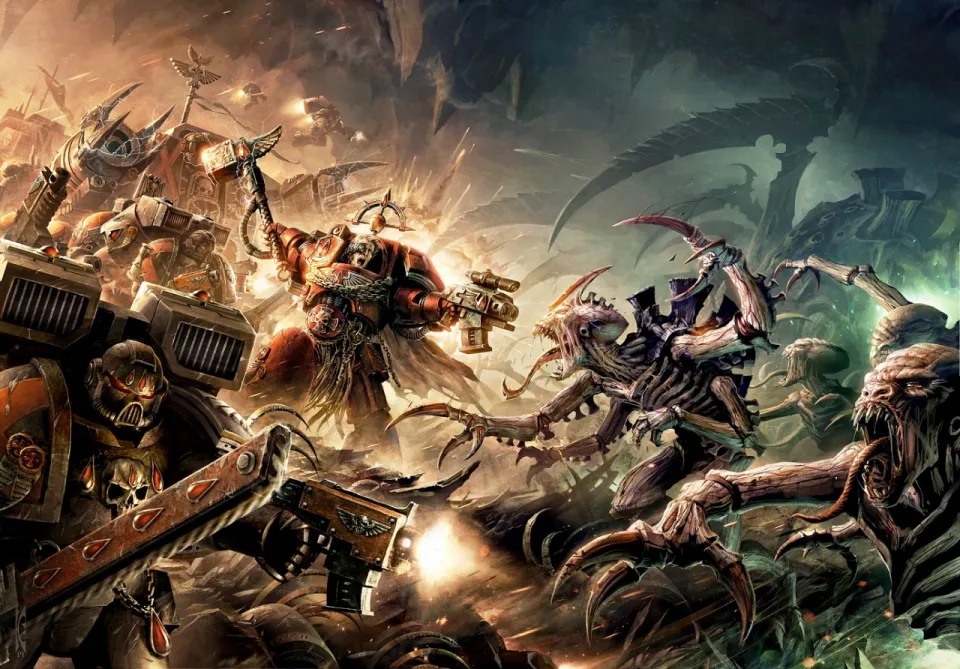
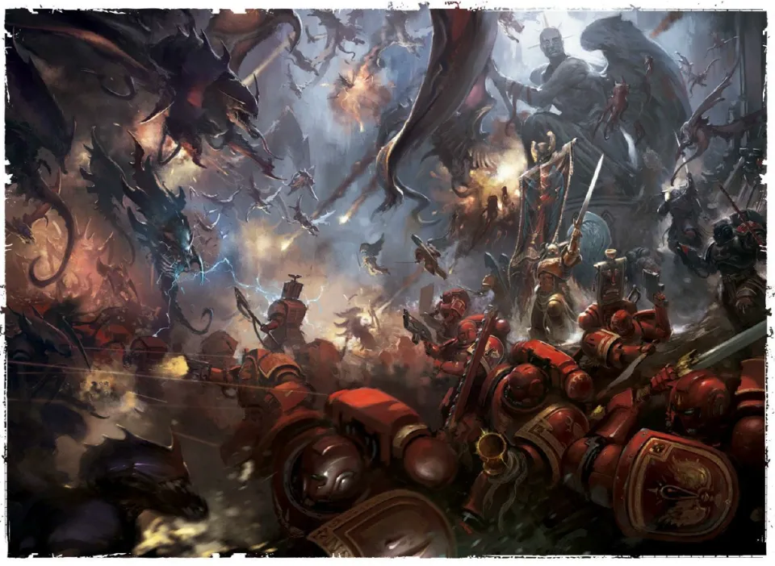
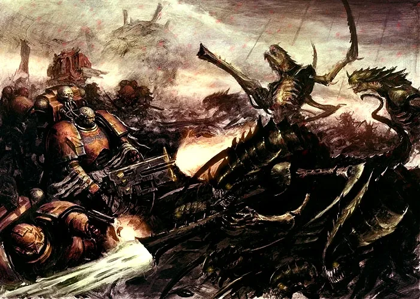
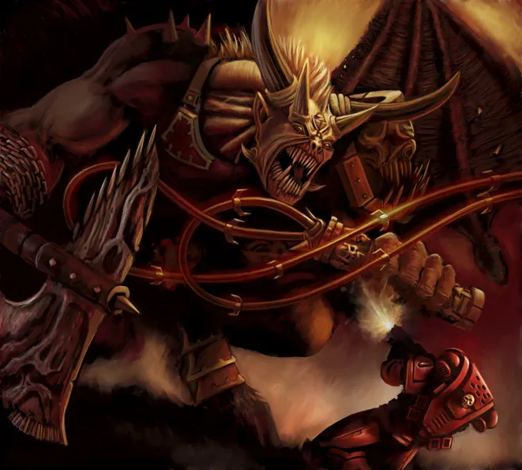
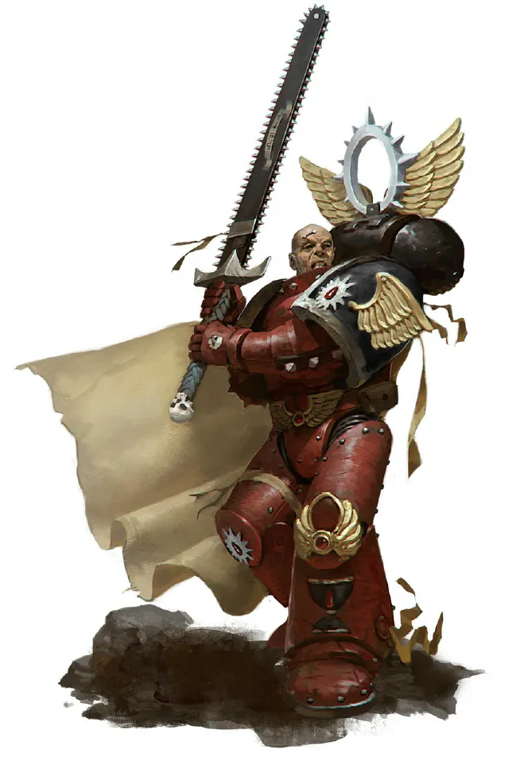
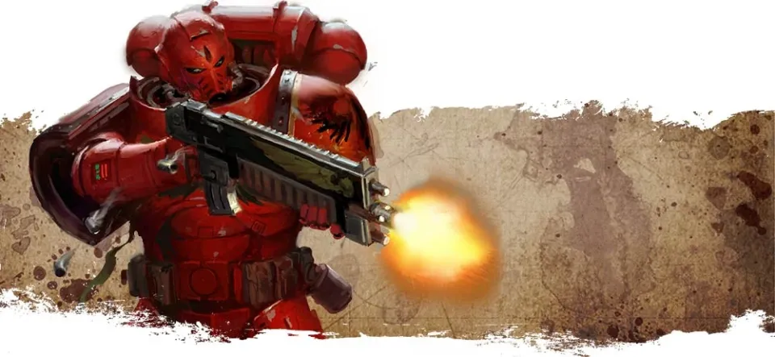

01ภาพรวม
Baal (บาล) คือดาวบ้านเกิดของ Blood Angels ระบบดาวที่มีดวงจันทร์สองดวงซึ่งถูกสงครามนิวเคลียร์โบราณเผาจนเป็นทะเลทรายรังสี ที่นี่คือที่ที่ Sanguinius เติบโต และเป็นหัวใจของ Chapter ทุกแห่งที่สืบสายเลือดของเขา
ในปลายสหัสวรรษที่ 41 ฝูงที่ใหญ่ที่สุดของ Hive Fleet Leviathan พุ่งตรงมาที่ระบบ Baal สงครามที่ตามมาเรียกว่า Devastation of Baal — การรบที่นองเลือดที่สุดในประวัติศาสตร์ของลูกหลาน Sanguinius
02ก่อนพายุ: Cryptus Shield
ระบบดาว Cryptus เป็นแนวป้องกันด่านหน้าของ Baal ในปี 998.M41 ข่าวมาถึงว่าแนวป้องกันนี้กำลังพัง Commander Dante Chapter Master ที่อายุมากที่สุดของจักรวรรดิ (กว่า 1,100 ปี) นำกำลังชั้นยอด — 1st และ 2nd Company, Chief Librarian Mephiston, Brother Corbulo และ Flesh Tearers ของ Gabriel Seth — ไปช่วย
สงครามโหดร้ายจน Blood Angels ต้องใช้อาวุธโบราณของ Necron ชื่อ Magnovitrium ระเบิดดาวทั้งดวง แล้วใช้เศษดาวทำลายฝูงที่กำลังเข้ามา Dante รู้ว่ามันแค่ชะลอศัตรูได้ จึงสั่งถอยกลับไปสู้ที่บ้าน
03มาตรการสิ้นหวัง
- Sanguinary Brotherhood รวมตัว — Dante ส่งข่าวไปยัง Chapter ทุกแห่งที่สืบสายเลือด Sanguinius ทุกแห่งตอบรับ ตั้งแต่ Flesh Tearers ที่ดุร้าย Blood Drinkers ผู้สูงส่ง ไปจนถึง Carmine Blades ที่ปิดตัว รวมเกือบ 60 Chapter ราว 29,000 นาย
- ส่ง gene-seed หนี — คลัง gene-seed ของ Blood Angels ถูกขนขึ้นเรือเร็วส่งออกไปนอกระบบ เผื่อทุกคนตาย
- ทหารเด็ก — ประเพณีหลายพันปีถูกทิ้ง เด็กหนุ่มจากเผ่าบน Baal Prime และ Baal Secundus ราว 40,000 คนถูกติดอาวุธ และได้รับสัญญาว่าใครรอดจะได้เข้าร่วม Chapter
- Knights of Blood — Chapter ที่ถูกขับออก (Excommunicate) ก็ถูก Dante ยอมรับเป็นพันธมิตร

04การรบ
กองเรือเผชิญหน้า
เรือชีวภาพหลายแสนลำพุ่งเข้าระบบเหมือนสิ่งมีชีวิตตัวเดียว กองเรือของ Blood Angels และ Chapter สมทบเข้าปะทะตรง ๆ เพื่อชะลอ
สิบเก้าระลอก
สปอร์ของ Tyranid ตกลงมาไม่หยุด เหนือฝูงมี Swarmlord ผู้ส่งสารของ Hive Mind คอยศึกษาและตอบโต้ทุกยุทธวิธี ฝ่ายป้องกันตีกลับได้สิบเก้าระลอกตลอดหลายสัปดาห์ หมู่บ้าน Angel's Fall ที่คัดเลือกผู้สมัครถูกกลืน ขณะที่ Carmine Blades ยืนหยัดปกป้องสถานี Astropath เพื่อให้ใครสักคนได้ยินเสียงขอความช่วยเหลือ
Great Rift เปิด
ท้องฟ้าของ Baal ลุกเป็นไฟเมื่อ Great Rift เปิด บนดวงจันทร์ Baal Prime ความเป็นจริงฉีกขาด และ Ka'bandha Bloodthirster ศัตรูเก่าตั้งแต่ Signus นำปีศาจของ Khorne ออกมา สังหารทั้ง Tyranid และ Space Marine
Knights of Blood เสียสละ
Gabriel Seth ต้องถอย Knights of Blood ที่ตกอยู่ใน Black Rage พุ่งเข้าหาศัตรูเพื่อซื้อเวลาให้คนอื่นหนีขึ้นเรือ Baal Prime ถูกปีศาจกลืน
Dome of Angels
ระลอกที่ใหญ่ที่สุดทะลวงป้อม Arx Angelicum Chapter Master สามคนตายในศึกที่ Dome of Angels ฝ่ายป้องกันถึงขั้นปล่อย Death Company ที่ถูกขังไว้ออกมาสู้
Dante ปะทะ Swarmlord
Swarmlord ลงสนามด้วยตัวเอง Dante ที่บาดเจ็บหลายสิบแผลใช้ขวาน Axe Mortalis ฟันฝ่าศัตรูเข้าไปดวล และสังหาร Swarmlord ได้
Guilliman มาถึง
ดรอปพอดและยาน Stormraven ปรากฏบนท้องฟ้า — กองเรือของ Indomitus Crusade พร้อม Primaris Space Marine มาถึง ฝูงที่เหลือขาดผู้นำและถูกทำลายจนหมด





05หลังการรบ
Baal และ Baal Secundus ถูกกวาดล้างภายในหนึ่งเดือน แต่ Baal Prime ไม่เหลือชีวิตใด ๆ ทั้งมนุษย์และ Tyranid สิ่งเดียวที่ปีศาจทิ้งไว้คือภูเขากะโหลก Tyranid ที่เรียงเป็นสัญลักษณ์ของ Khorne คลุมครึ่งซีกใต้ของดวงจันทร์ — Dante สั่งยิงถล่มจากวงโคจรจนหายไป ไม่มีใครรู้ว่าทำไม Ka'bandha ถึงมา บางคนเชื่อว่ามันต้องการเป็น "ผู้เดียว" ที่ได้ทำลาย Blood Angels
- Dante คุกเข่าต่อ Guilliman — Primarch เห็นในตัว Dante ถึงจิตวิญญาณที่หลงเหลือจากยุคเก่า และแต่งตั้งเขาเป็น Lord Regent of Imperium Nihilus ผู้ปกครองครึ่งหนึ่งของจักรวรรดิที่อยู่อีกฝั่งของรอยแยก
- Primaris สายเลือด Sanguinius — Guilliman มอบ Primaris Space Marine ที่สร้างจาก gene-seed ของ Sanguinius ให้ทุก Chapter ที่บอบช้ำ
- ผู้สมัครรุ่นใหม่ — เด็กหนุ่มหลายพันคนที่รอดจากการรบถูกรับเข้า Chapter ตามสัญญา

06แหล่งข้อมูลและหมายเหตุ
เนื้อหาหน้านี้สรุปและแปลเป็นภาษาไทยจากบทความใน Warhammer 40k Wiki (Fandom) ซึ่งเรียบเรียงจากหนังสือ Codex, หนังสือชุด Horus Heresy ของ Forge World และนิยาย Black Library ด้านล่างนี้ (ตรวจสอบ ต.ค. 2026)
เนื้อเรื่อง Warhammer ถูกเขียนเพิ่มและแก้ไขมาตลอดหลายสิบปี ปี จำนวน และรายละเอียดบางจุดต่างกันไปตามหนังสือแต่ละเล่ม หน้านี้ใช้ฉบับที่แหล่งอ้างอิงส่วนใหญ่ยอมรับ และบอกไว้เมื่อมีหลายฉบับ